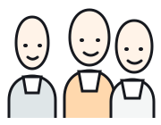

北山 真理子
60時間前・日報
日報の人手不足に、クラチさんの現場へ自分から手伝いに入りました。
こんなこと社長や社員さんに言うことでもないから。 そうやって消えていく大切な従業員の声を拾う仕組みが報告革命です。 現場の声を会社の力に変えます。
日報の人手不足に、クラチさんの現場へ自分から手伝いに入りました。
レジ周りの動線、棚を1つ寄せるだけで2人すれ違えることに気づきました。
現場の声が
上がってこない
改善提案が
減っている
店舗ごとに
バラバラ
「言ってもムダ」
という空気
現場の温度を見える化し、声が届く会社へ変えていく必要があります。
その課題、“仕組み”で解決できます。
FEATURE 01
日報・つぶやきで、誰でも簡単に投稿。アルバイト・パートの声も自然に集まる。
今日の忙しい時間帯に、隣レーンのフォローへ入りました。
メダル x4 コメント 8FEATURE 02
掲示板機能で全社共有を一本化。誰がいつ見たかを可視化できます。
FEATURE 03
投稿数・コメント・改善提案を分析。独自の「ギバー指数」で評価します。
企業規模・利用人数に応じて最適なプランをご提案します。

まずは無料デモで体験してください。実際の画面を使って「報告 → 評価 → 見える化」の流れをご確認いただけます。
はい。日報・つぶやき・掲示板の確認までスマートフォンで利用できます。
使えます。短い投稿でも参加できる設計なので、現場の小さな気づきを拾いやすくなります。
無料デモで実際の画面をご覧いただけます。運用イメージに合わせてご説明します。
無料デモのお申し込み